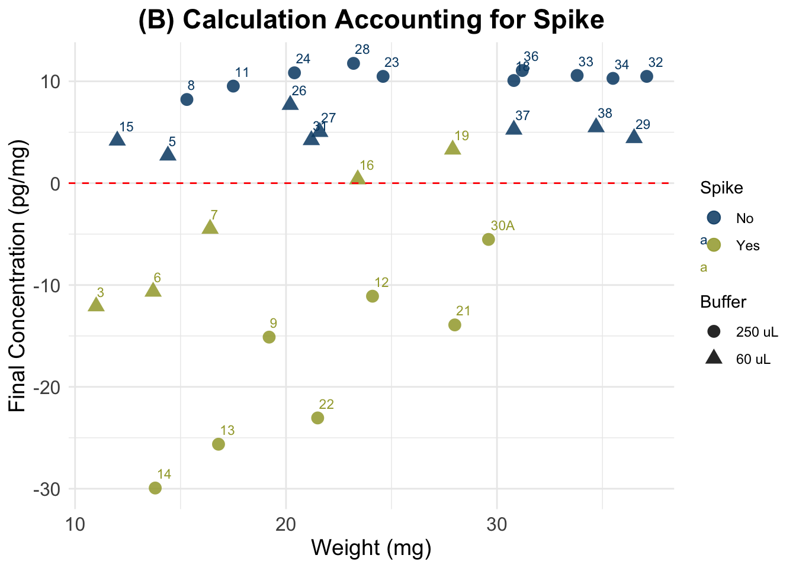

Cortisol Concentration Values, Test3
Paloma Contreras
2025-04-10
Last updated: 2025-04-10
Checks: 6 1
Knit directory:
HairCort-Evaluation-Nist2020/
This reproducible R Markdown analysis was created with workflowr (version 1.7.1). The Checks tab describes the reproducibility checks that were applied when the results were created. The Past versions tab lists the development history.
The R Markdown file has unstaged changes. To know which version of
the R Markdown file created these results, you’ll want to first commit
it to the Git repo. If you’re still working on the analysis, you can
ignore this warning. When you’re finished, you can run
wflow_publish to commit the R Markdown file and build the
HTML.
Great job! The global environment was empty. Objects defined in the global environment can affect the analysis in your R Markdown file in unknown ways. For reproduciblity it’s best to always run the code in an empty environment.
The command set.seed(20241016) was run prior to running
the code in the R Markdown file. Setting a seed ensures that any results
that rely on randomness, e.g. subsampling or permutations, are
reproducible.
Great job! Recording the operating system, R version, and package versions is critical for reproducibility.
Nice! There were no cached chunks for this analysis, so you can be confident that you successfully produced the results during this run.
Great job! Using relative paths to the files within your workflowr project makes it easier to run your code on other machines.
Great! You are using Git for version control. Tracking code development and connecting the code version to the results is critical for reproducibility.
The results in this page were generated with repository version bbb70a9. See the Past versions tab to see a history of the changes made to the R Markdown and HTML files.
Note that you need to be careful to ensure that all relevant files for
the analysis have been committed to Git prior to generating the results
(you can use wflow_publish or
wflow_git_commit). workflowr only checks the R Markdown
file, but you know if there are other scripts or data files that it
depends on. Below is the status of the Git repository when the results
were generated:
Ignored files:
Ignored: .DS_Store
Ignored: .RData
Ignored: .Rhistory
Ignored: analysis/.DS_Store
Ignored: analysis/.Rhistory
Ignored: data/.DS_Store
Ignored: data/Test3/.DS_Store
Ignored: data/Test4/.DS_Store
Untracked files:
Untracked: analysis/ELISA_Analysis_FinalVals_comparisons_test3_test4.Rmd
Unstaged changes:
Deleted: ELISA_Analysis_FinalVals_comparisons_test3_test4.Rmd
Deleted: ELISA_Analysis_FinalVals_comparisons_test3_test4.html
Modified: analysis/ELISA_Analysis_RawVals_test3.Rmd
Modified: analysis/ELISA_Analysis_RawVals_test4.Rmd
Modified: analysis/ELISA_Calc_FinalVals_test3.Rmd
Modified: analysis/ELISA_Calc_FinalVals_test4.Rmd
Modified: analysis/ELISA_QC_test4.Rmd
Modified: data/Test4/Data_QC_filtered.csv
Modified: data/Test4/Data_QC_flagged.csv
Modified: data/Test4/Data_cort_values_methodA.csv
Modified: data/Test4/Data_cort_values_methodB.csv
Modified: data/Test4/Data_cort_values_methodC.csv
Modified: data/Test4/Data_cort_values_methodD.csv
Modified: data/Test4/failed_samples.csv
Deleted: temp.html
Note that any generated files, e.g. HTML, png, CSS, etc., are not included in this status report because it is ok for generated content to have uncommitted changes.
These are the previous versions of the repository in which changes were
made to the R Markdown
(analysis/ELISA_Calc_FinalVals_test3.Rmd) and HTML
(docs/ELISA_Calc_FinalVals_test3.html) files. If you’ve
configured a remote Git repository (see ?wflow_git_remote),
click on the hyperlinks in the table below to view the files as they
were in that past version.
| File | Version | Author | Date | Message |
|---|---|---|---|---|
| html | bbb70a9 | Paloma | 2025-04-09 | comparing methods |
| Rmd | ccad031 | Paloma | 2025-04-09 | new_calc |
| html | ccad031 | Paloma | 2025-04-09 | new_calc |
| Rmd | 77c2ab5 | Paloma | 2025-04-08 | cleaning test3 |
| html | 77c2ab5 | Paloma | 2025-04-08 | cleaning test3 |
Summary
Cortisol value calculations were conducted using two methods:
- Standard Method (Method A): Calculates cortisol concentration without correction for spiked samples.
- Spike-Corrected Method (Method B): Adjusts for spiked samples to account for addition of a known amount of cortisol, following Nist et al. 2020.
Results: As we see below, the formula used by Nist et al. results in negative values, which would mean that there is no cortisol in original samples.
| Summary | Nist et al. | My samples | Non-spiked only |
|---|---|---|---|
| Mean cort conc (pg/mg) | 23.74 | -0.18 | 7.9 |
| Range cort conc (pg/mg) | 2.1 to 124.9* | -29.3 to 11.76 | 2.71 to 11.76 |
| Weight range (mg) | 0.4 to 10.9 | 11 to 37.1 | 12 to 37 |
| Sample size | X | 30 | 18 |
This could be an artifact of an extremely high absorbance level. Non-spiked samples, however, result in values that are within the range found in similar studies of cortisol in human hair. After accounting for differences in dilution and weight, our results suggest some optimal parameters.
Conclusions:
- Dilution of 250uL is preferable over 60uL
- Non-spiked samples seem to generate expected results
Concerns
- Spike results in unrealistic values
- Could be explained by the higher weight of our samples
- Dilution of 250uL results in values that are twice as big as with 60uL, but they should be very similar or at least overlap
# DATA SET
current_test <- "Test3"
data_path <- file.path("./data", current_test)# Define volume of methanol used for cortisol extraction
# vol added / vol recovered (mL)
extraction <- 1.3 / 1
# Reading of spike standard and conversion to ug/dL
std <- (3133 + 3146) / 2. # test 3 backfit
std.r <- std / 10000Loading files and transforming units, including low quality data
df <- read.csv(file.path(data_path,"Data_QC_flagged.csv"))
kable(tail(df))| Sample | Wells | Raw.OD | Binding.Perc | Conc_pg.ml | Ave_Conc_pg.ml | CV.Perc | SD | SEM | Category | Weight_mg | Buffer_nl | Spike | TotalVol_well_uL | SpikeVol_uL | Dilution | CV_categ | Binding.Perc_categ | Failed_samples | |
|---|---|---|---|---|---|---|---|---|---|---|---|---|---|---|---|---|---|---|---|
| 34 | 4 | F3 | 1.070 | 80.6 | 295.8 | 334.5 | 16.30 | 54.6 | 38.6 | NoSpike | 11.7 | 250 | 0 | 50 | 0 | 1 | HIGH CV | ABOVE 80% binding | HIGH CV;ABOVE 80% binding |
| 35 | 5 | G3 | 0.944 | 72.1 | 488.0 | 501.4 | 3.79 | 19.0 | 13.4 | NoSpike | 14.4 | 60 | 0 | 50 | 0 | 1 | NA | NA | NA |
| 36 | 6 | H3 | 0.490 | 34.7 | 2099.0 | 2204.0 | 6.75 | 149.0 | 105.0 | YesSpike | 13.7 | 60 | 1 | 50 | 25 | 1 | NA | NA | NA |
| 37 | 7 | A5 | 0.436 | 30.5 | 2551.0 | 2669.0 | 6.25 | 167.0 | 118.0 | YesSpike | 16.4 | 60 | 1 | 50 | 25 | 1 | NA | NA | NA |
| 38 | 8 | B5 | 1.030 | 77.8 | 354.9 | 386.8 | 11.70 | 45.1 | 31.9 | NoSpike | 15.3 | 250 | 0 | 50 | 0 | 1 | NA | NA | NA |
| 39 | 9 | C5 | 0.432 | 30.3 | 2590.0 | 2693.0 | 5.46 | 147.0 | 104.0 | YesSpike | 19.2 | 250 | 1 | 50 | 25 | 1 | NA | NA | NA |
# Creating variables in indicated units
# dilution (buffer)
df$Buffer_ml <- c(df$Buffer_nl/1000)
# remove unnecessary information
data <- df %>%
filter(CV.Perc < 15) %>%
filter(Binding.Perc < 80 & Binding.Perc > 20) %>%
dplyr::select(Wells, Sample, Category, Binding.Perc, Ave_Conc_pg.ml, Weight_mg, Buffer_ml, Spike, SpikeVol_uL, Dilution, TotalVol_well_uL, Failed_samples)
kable(tail(data, 10))| Wells | Sample | Category | Binding.Perc | Ave_Conc_pg.ml | Weight_mg | Buffer_ml | Spike | SpikeVol_uL | Dilution | TotalVol_well_uL | Failed_samples | |
|---|---|---|---|---|---|---|---|---|---|---|---|---|
| 21 | B11 | 33 | NoSpike | 52.3 | 1100.0 | 33.8 | 0.25 | 0 | 0 | 1 | 50 | NA |
| 22 | C11 | 34 | NoSpike | 51.7 | 1124.0 | 35.5 | 0.25 | 0 | 0 | 1 | 50 | NA |
| 23 | E11 | 36 | NoSpike | 53.2 | 1062.0 | 31.2 | 0.25 | 0 | 0 | 1 | 50 | NA |
| 24 | F11 | 37 | NoSpike | 36.1 | 2076.0 | 30.8 | 0.06 | 0 | 0 | 1 | 50 | NA |
| 25 | G11 | 38 | NoSpike | 32.5 | 2444.0 | 34.7 | 0.06 | 0 | 0 | 1 | 50 | NA |
| 26 | G3 | 5 | NoSpike | 72.1 | 501.4 | 14.4 | 0.06 | 0 | 0 | 1 | 50 | NA |
| 27 | H3 | 6 | YesSpike | 34.7 | 2204.0 | 13.7 | 0.06 | 1 | 25 | 1 | 50 | NA |
| 28 | A5 | 7 | YesSpike | 30.5 | 2669.0 | 16.4 | 0.06 | 1 | 25 | 1 | 50 | NA |
| 29 | B5 | 8 | NoSpike | 77.8 | 386.8 | 15.3 | 0.25 | 0 | 0 | 1 | 50 | NA |
| 30 | C5 | 9 | YesSpike | 30.3 | 2693.0 | 19.2 | 0.25 | 1 | 25 | 1 | 50 | NA |
dim(data)[1] 30 12# remove duplicates
data.og <- data[!is.na(data$Binding.Perc), ](A) Standard Calculation
Formula:
((A/B) * (C/D) * E * 10,000) = F
- A = μg/dl from assay output;
- B = weight (in mg) of hair subjected to extraction;
- C = vol. (in ml) of methanol added to the powdered hair;
- D = vol. (in ml) of methanol recovered from the extract and subsequently dried down;
- E = vol. (in ml) of assay buffer used to reconstitute the dried extract;
- F = final value of hair CORT Concentration in pg/mg.
##################################
##### Calculate final values #####
##################################
# Transform to μg/dl from assay output
data$Ave_Conc_ug.dL <- c(data$Ave_Conc_pg.ml/10000)
data$Final_conc_pg.mg <- c(
((data$Ave_Conc_ug.dL) / data$Weight_mg) * # A/B *
extraction * # C/D *
data$Buffer_ml * 10000 ) # E * 10000
data <- data[order(data$Sample),]
write.csv(data, file.path(data_path, "Data_cort_values_methodA.csv"), row.names = F)
# summary for all samples
summary(data$Final_conc_pg.mg) Min. 1st Qu. Median Mean 3rd Qu. Max.
2.716 7.820 10.531 16.376 15.336 58.971 kable(tail(data, 7))| Wells | Sample | Category | Binding.Perc | Ave_Conc_pg.ml | Weight_mg | Buffer_ml | Spike | SpikeVol_uL | Dilution | TotalVol_well_uL | Failed_samples | Ave_Conc_ug.dL | Final_conc_pg.mg | |
|---|---|---|---|---|---|---|---|---|---|---|---|---|---|---|
| 24 | F11 | 37 | NoSpike | 36.1 | 2076.0 | 30.8 | 0.06 | 0 | 0 | 1 | 50 | NA | 0.20760 | 5.257403 |
| 25 | G11 | 38 | NoSpike | 32.5 | 2444.0 | 34.7 | 0.06 | 0 | 0 | 1 | 50 | NA | 0.24440 | 5.493718 |
| 26 | G3 | 5 | NoSpike | 72.1 | 501.4 | 14.4 | 0.06 | 0 | 0 | 1 | 50 | NA | 0.05014 | 2.715917 |
| 27 | H3 | 6 | YesSpike | 34.7 | 2204.0 | 13.7 | 0.06 | 1 | 25 | 1 | 50 | NA | 0.22040 | 12.548321 |
| 28 | A5 | 7 | YesSpike | 30.5 | 2669.0 | 16.4 | 0.06 | 1 | 25 | 1 | 50 | NA | 0.26690 | 12.694024 |
| 29 | B5 | 8 | NoSpike | 77.8 | 386.8 | 15.3 | 0.25 | 0 | 0 | 1 | 50 | NA | 0.03868 | 8.216340 |
| 30 | C5 | 9 | YesSpike | 30.3 | 2693.0 | 19.2 | 0.25 | 1 | 25 | 1 | 50 | NA | 0.26930 | 45.584635 |
dim(data)[1] 30 14(B) Accounting for Spike
We followed the procedure described in Nist et al. 2020:
“Thus, after pipetting 25μL of standards and samples into the appropriate wells of the 96-well assay plate, we added 25μL of the 0.333ug/dL standard to all samples, resulting in a 1:2 dilution of samples. The remainder of the manufacturer’s protocol was unchanged. We analyzed the assay plate in a Powerwave plate reader (BioTek, Winooski, VT) at 450nm and subtracted background values from all assay wells. In the calculations, we subtracted the 0.333ug/dL standard reading from the sample readings. Samples that resulted in a negative number were considered nondetectable. We converted cortisol levels from ug/dL, as measured by the assay, to pg/mg—based on the mass of hair collected and analyzed using the following formula:
A/B * C/D * E * 10,000 * 2 = F
where - A = μg/dl from assay output; - B = weight (in mg) of collected hair; - C = vol. (in ml) of methanol added to the powdered hair; - D = vol. (in ml) of methanol recovered from the extract and subsequently dried down; - E = vol. (in ml) of assay buffer used to reconstitute the dried extract; 10,000 accounts for changes in metrics; 2 accounts for the dilution factor after addition of the spike; and - F = final value of hair cortisol concentration in pg/mg”
dSpike <- data
##################################
##### Calculate final values #####
##################################
dSpike$Final_conc_pg.mg <-
ifelse(
dSpike$Spike == 1, ## Only spiked samples
((dSpike$Ave_Conc_ug.dL - (std.r)) / # (A-spike) / B
dSpike$Weight_mg)
* extraction * # C / D
dSpike$Buffer_ml * 10000 * 2, # E * 10000 * 2
dSpike$Final_conc_pg.mg
)
write.csv(dSpike, file.path(data_path, "Data_cort_values_methodB.csv"), row.names = F)
# summary for all samples
summary(dSpike$Final_conc_pg.mg) Min. 1st Qu. Median Mean 3rd Qu. Max.
-29.933 -9.370 4.328 -0.182 9.944 11.763 dSpikeSub <- data[c(data$Spike == 0), ]
summary(dSpikeSub$Final_conc_pg.mg) Min. 1st Qu. Median Mean 3rd Qu. Max.
2.716 5.087 8.874 7.908 10.486 11.763 kable(tail(dSpike, 10))| Wells | Sample | Category | Binding.Perc | Ave_Conc_pg.ml | Weight_mg | Buffer_ml | Spike | SpikeVol_uL | Dilution | TotalVol_well_uL | Failed_samples | Ave_Conc_ug.dL | Final_conc_pg.mg | |
|---|---|---|---|---|---|---|---|---|---|---|---|---|---|---|
| 21 | B11 | 33 | NoSpike | 52.3 | 1100.0 | 33.8 | 0.25 | 0 | 0 | 1 | 50 | NA | 0.11000 | 10.576923 |
| 22 | C11 | 34 | NoSpike | 51.7 | 1124.0 | 35.5 | 0.25 | 0 | 0 | 1 | 50 | NA | 0.11240 | 10.290141 |
| 23 | E11 | 36 | NoSpike | 53.2 | 1062.0 | 31.2 | 0.25 | 0 | 0 | 1 | 50 | NA | 0.10620 | 11.062500 |
| 24 | F11 | 37 | NoSpike | 36.1 | 2076.0 | 30.8 | 0.06 | 0 | 0 | 1 | 50 | NA | 0.20760 | 5.257403 |
| 25 | G11 | 38 | NoSpike | 32.5 | 2444.0 | 34.7 | 0.06 | 0 | 0 | 1 | 50 | NA | 0.24440 | 5.493718 |
| 26 | G3 | 5 | NoSpike | 72.1 | 501.4 | 14.4 | 0.06 | 0 | 0 | 1 | 50 | NA | 0.05014 | 2.715917 |
| 27 | H3 | 6 | YesSpike | 34.7 | 2204.0 | 13.7 | 0.06 | 1 | 25 | 1 | 50 | NA | 0.22040 | -10.652409 |
| 28 | A5 | 7 | YesSpike | 30.5 | 2669.0 | 16.4 | 0.06 | 1 | 25 | 1 | 50 | NA | 0.26690 | -4.475488 |
| 29 | B5 | 8 | NoSpike | 77.8 | 386.8 | 15.3 | 0.25 | 0 | 0 | 1 | 50 | NA | 0.03868 | 8.216340 |
| 30 | C5 | 9 | YesSpike | 30.3 | 2693.0 | 19.2 | 0.25 | 1 | 25 | 1 | 50 | NA | 0.26930 | -15.115885 |
(C) Skip unit transformation
##################################
##### Calculate final values #####
##################################
datac <- data
datac$Final_conc_pg.mg <- c(
(datac$Ave_Conc_pg.ml / datac$Weight_mg) * # A/B *
extraction * # C/D *
datac$Buffer_ml) # E
datac <- datac[order(datac$Sample),]
write.csv(datac, file.path(data_path, "Data_cort_values_methodC.csv"), row.names = F)
# summary for all samples
summary(datac$Final_conc_pg.mg) Min. 1st Qu. Median Mean 3rd Qu. Max.
2.716 7.820 10.531 16.376 15.336 58.971 (D) Account for Spike contribution (uses vol. of spike, conc. of spike, and total reconstit. vol.)
Spike contribution (pg/mL) = (Vol. spike (mL) x Conc. spike (pg/mL) ) / Vol. reconstitution (mL) or total vol. in well (50uL) (depending on where the spike was added)
# Calculate contribution of spike according to the different volumes in which it was added
# Consider that contribution of spike in serial dilutions gets smaller
# Vol. of spike transformed to mL
data$SpikeVol_ml <- data$SpikeVol_uL/1000
# Concentration of the spike:
std[1] 3139.5# Vol. reconstitution (mL) is the total volume in tube or well (sample + spike), after adding spike.
# transform to mL
data$TotalVol_well_mL <- data$TotalVol_well_uL/1000
##( Spike vol. x Spike Conc.)
## ------------------------ / dilution = Spike contribution
## Total vol.
# Cortisol added by spike in wells: 0.0025 mL x 3200 pg/mL = 80 pg
# Calculate cort contribution of spike to each sample
data$Spike.cont_pg.mL <- (((data$SpikeVol_ml * std ) / # Volume of spike * Spike concentration
data$TotalVol_well_mL) / # divided by the total volume (spike + sample)
data$Dilution) # resulting number changes depending on the dilution
dSpiked <- data
##################################
##### Calculate final values #####
##################################
dSpiked$Final_conc_pg.mg <-
((dSpiked$Ave_Conc_pg.ml - dSpiked$Spike.cont_pg.mL) / # (A - spike) / B
dSpiked$Weight_mg) *
extraction * # C / D
dSpiked$Buffer_ml # E * dilution
write.csv(dSpiked, file.path(data_path, "Data_cort_values_methodD.csv"), row.names = F)
# summary for all samples
summary(dSpiked$Final_conc_pg.mg) Min. 1st Qu. Median Mean 3rd Qu. Max.
2.716 5.235 9.806 9.329 11.212 22.002 kable(tail(dSpiked[!is.na(dSpiked$Final_conc_pg.mg) , c("Sample", "Final_conc_pg.mg", "Ave_Conc_pg.ml", "Spike.cont_pg.mL", "Binding.Perc", "Weight_mg", "Buffer_ml", "SpikeVol_uL", "Dilution", "TotalVol_well_uL")],20))| Sample | Final_conc_pg.mg | Ave_Conc_pg.ml | Spike.cont_pg.mL | Binding.Perc | Weight_mg | Buffer_ml | SpikeVol_uL | Dilution | TotalVol_well_uL | |
|---|---|---|---|---|---|---|---|---|---|---|
| 11 | 23 | 10.484553 | 793.6 | 0.00 | 60.9 | 24.6 | 0.25 | 0 | 1 | 50 |
| 12 | 24 | 10.836520 | 680.2 | 0.00 | 64.8 | 20.4 | 0.25 | 0 | 1 | 50 |
| 13 | 26 | 7.688020 | 1991.0 | 0.00 | 37.3 | 20.2 | 0.06 | 0 | 1 | 50 |
| 14 | 27 | 5.030278 | 1393.0 | 0.00 | 46.0 | 21.6 | 0.06 | 0 | 1 | 50 |
| 15 | 28 | 11.763039 | 839.7 | 0.00 | 59.5 | 23.2 | 0.25 | 0 | 1 | 50 |
| 16 | 29 | 4.427836 | 2072.0 | 0.00 | 36.2 | 36.5 | 0.06 | 0 | 1 | 50 |
| 17 | 3 | 5.085954 | 2287.0 | 1569.75 | 33.9 | 11.0 | 0.06 | 25 | 1 | 50 |
| 18 | 30A | 14.474029 | 2888.0 | 1569.75 | 28.8 | 29.6 | 0.25 | 25 | 1 | 50 |
| 19 | 31 | 4.227453 | 1149.0 | 0.00 | 51.2 | 21.2 | 0.06 | 0 | 1 | 50 |
| 20 | 32 | 10.485849 | 1197.0 | 0.00 | 50.0 | 37.1 | 0.25 | 0 | 1 | 50 |
| 21 | 33 | 10.576923 | 1100.0 | 0.00 | 52.3 | 33.8 | 0.25 | 0 | 1 | 50 |
| 22 | 34 | 10.290141 | 1124.0 | 0.00 | 51.7 | 35.5 | 0.25 | 0 | 1 | 50 |
| 23 | 36 | 11.062500 | 1062.0 | 0.00 | 53.2 | 31.2 | 0.25 | 0 | 1 | 50 |
| 24 | 37 | 5.257403 | 2076.0 | 0.00 | 36.1 | 30.8 | 0.06 | 0 | 1 | 50 |
| 25 | 38 | 5.493718 | 2444.0 | 0.00 | 32.5 | 34.7 | 0.06 | 0 | 1 | 50 |
| 26 | 5 | 2.715917 | 501.4 | 0.00 | 72.1 | 14.4 | 0.06 | 0 | 1 | 50 |
| 27 | 6 | 3.611058 | 2204.0 | 1569.75 | 34.7 | 13.7 | 0.06 | 25 | 1 | 50 |
| 28 | 7 | 5.228140 | 2669.0 | 1569.75 | 30.5 | 16.4 | 0.06 | 25 | 1 | 50 |
| 29 | 8 | 8.216340 | 386.8 | 0.00 | 77.8 | 15.3 | 0.25 | 0 | 1 | 50 |
| 30 | 9 | 19.013346 | 2693.0 | 1569.75 | 30.3 | 19.2 | 0.25 | 25 | 1 | 50 |
Plots


(D) New calculation (substract half of the spike from A)

| Version | Author | Date |
|---|---|---|
| ccad031 | Paloma | 2025-04-09 |
Wells Sample Category Binding.Perc Ave_Conc_pg.ml Weight_mg Buffer_ml Spike
1 E5 11 NoSpike 71.6 513.2 17.5 0.25 No
2 F5 12 YesSpike 30.0 2728.0 24.1 0.25 Yes
3 G5 13 YesSpike 32.1 2477.0 16.8 0.25 Yes
4 H5 14 YesSpike 31.8 2504.0 13.8 0.25 Yes
5 A7 15 NoSpike 66.2 643.6 12.0 0.06 No
6 B7 16 YesSpike 26.8 3196.0 23.4 0.06 Yes
SpikeVol_uL Dilution TotalVol_well_uL Failed_samples Ave_Conc_ug.dL
1 0 1 50 <NA> 0.05132
2 25 1 50 <NA> 0.27280
3 25 1 50 <NA> 0.24770
4 25 1 50 <NA> 0.25040
5 0 1 25 <NA> 0.06436
6 25 1 50 <NA> 0.31960
Final_conc_pg.mg SpikeVol_ml TotalVol_well_mL Spike.cont_pg.mL Buffer
1 9.530857 0.000 0.050 0.00 250 uL
2 15.619554 0.025 0.050 1569.75 250 uL
3 17.550967 0.025 0.050 1569.75 250 uL
4 22.002264 0.025 0.050 1569.75 250 uL
5 4.183400 0.000 0.025 0.00 60 uL
6 5.420833 0.025 0.050 1569.75 60 uLEvaluation Non-spiked Samples Only
Since all spiked samples produce negative values, we will continue our analyses using only non-spiked samples.
# non-spiked samples only
data2 <-data[data$Spike == "No", ]
#two datasets, separated by dilution
data2.06 <- data2[data2$Buffer == "60 uL", ]
data2.25 <- data2[data2$Buffer == "250 uL", ]
#### fit models ####
# model Buffer = 0.06
model06 <- lm(Final_conc_pg.mg ~ Weight_mg,
data = data2.06)
r_squared06 <- summary(model06)$r.squared
# model Buffer = 0.25
model25 <- lm(Final_conc_pg.mg ~ Weight_mg,
data = data2.25)
r_squared25 <- summary(model25)$r.squared
# Calculate residuals
residuals06 <- residuals(model06)
residuals25 <- residuals(model25)
# Quantify residuals
# Mean Absolute Error
mae06 <- mean(abs(residuals06))
# Standard Deviation of Residuals
std_dev06 <- sd(residuals06)
# Mean Absolute Error
mae25 <- mean(abs(residuals25))
# Standard Deviation of Residuals
std_dev25 <- sd(residuals25)
# scatterplot
ggplot(data2, aes(y = Final_conc_pg.mg,
x = Weight_mg,
color = Buffer,
fill = Buffer)) +
geom_point(size = 2.5) +
geom_text(label = c(data2$Sample), nudge_y = 0.75, nudge_x = -0.5) +
geom_smooth(method = "lm",
color = "gold3",
se = TRUE,
alpha = 0.1) +
geom_hline(yintercept = mean(data2$Final_conc_pg.mg),
color = "gray80",
linetype = "dashed") +
geom_hline(yintercept = mean(data2.06$Final_conc_pg.mg),
color = "lightblue3",
linetype = "dashed") +
geom_hline(yintercept = mean(data2.25$Final_conc_pg.mg),
color = "lightpink3",
linetype = "dashed") +
theme_minimal() +
xlim(5, max(data2$Weight_mg) + 4) +
ylim(0, max(data2$Final_conc_pg.mg)+4) +
labs(
title = "Final Cort Concentration and Weight
(Non-spiked only), method A",
y = "Final Concentration (pg/mg)",
x = "Weight (mg)"
) +
theme(
plot.title = element_text(hjust = 0.5, size = 16, face = "bold"),
axis.title = element_text(size = 14),
axis.text = element_text(size = 12)
) +
# Add R^2 annotation
annotate("text", x = max(data2$Weight_mg) * 0.7,
y = min(data2$Final_conc_pg.mg) * 1.5,
label = paste("R² =", round(r_squared06, 3)),
size = 5, color = "black") +
annotate("text", x = max(data2$Weight_mg) * 0.7,
y = max(data2$Final_conc_pg.mg) * 0.84,
label = paste("R² =", round(r_squared25, 3)),
size = 5, color = "black")
| Version | Author | Date |
|---|---|---|
| ccad031 | Paloma | 2025-04-09 |
The previous figure shows that:
- results are very stable across weights, particularly for the samples where a dilution of 250 uL was used
- there is more error when using a dilution of 60 uL
- dilution affects estimation of cortisol concentration in a significant way: even though final concentration numbers account for differences in the dilutions, the results we observe for each group do not overlap
- the average value when using 250 uL of buffer is twice as big as when using 60 uL
# non-spiked samples only
data <- dSpiked
data2 <-data[data$Spike == "No", ]
#two datasets, separated by dilution
data2.06 <- data2[data2$Buffer == "60 uL", ]
data2.25 <- data2[data2$Buffer == "250 uL", ]
#### fit models ####
# model Buffer = 0.06
model06 <- lm(Final_conc_pg.mg ~ Weight_mg,
data = data2.06)
r_squared06 <- summary(model06)$r.squared
# model Buffer = 0.25
model25 <- lm(Final_conc_pg.mg ~ Weight_mg,
data = data2.25)
r_squared25 <- summary(model25)$r.squared
# Calculate residuals
residuals06 <- residuals(model06)
residuals25 <- residuals(model25)
# Quantify residuals
# Mean Absolute Error
mae06 <- mean(abs(residuals06))
# Standard Deviation of Residuals
std_dev06 <- sd(residuals06)
# Mean Absolute Error
mae25 <- mean(abs(residuals25))
# Standard Deviation of Residuals
std_dev25 <- sd(residuals25)
# scatterplot
ggplot(data2, aes(y = Final_conc_pg.mg,
x = Weight_mg,
color = Buffer,
fill = Buffer)) +
geom_point(size = 2.5) +
geom_text(label = c(data2$Sample), nudge_y = 0.75, nudge_x = -0.5) +
geom_smooth(method = "lm",
color = "gold3",
se = TRUE,
alpha = 0.1) +
geom_hline(yintercept = mean(data2$Final_conc_pg.mg),
color = "gray80",
linetype = "dashed") +
geom_hline(yintercept = mean(data2.06$Final_conc_pg.mg),
color = "lightblue3",
linetype = "dashed") +
geom_hline(yintercept = mean(data2.25$Final_conc_pg.mg),
color = "lightpink3",
linetype = "dashed") +
theme_minimal() +
xlim(5, max(data2$Weight_mg) + 4) +
ylim(0, max(data2$Final_conc_pg.mg)+4) +
labs(
title = "Final Cort Concentration and Weight
(Non-spiked only) method D",
y = "Final Concentration (pg/mg)",
x = "Weight (mg)"
) +
theme(
plot.title = element_text(hjust = 0.5, size = 16, face = "bold"),
axis.title = element_text(size = 14),
axis.text = element_text(size = 12)
) +
# Add R^2 annotation
annotate("text", x = max(data2$Weight_mg) * 0.7,
y = min(data2$Final_conc_pg.mg) * 1.5,
label = paste("R² =", round(r_squared06, 3)),
size = 5, color = "black") +
annotate("text", x = max(data2$Weight_mg) * 0.7,
y = max(data2$Final_conc_pg.mg) * 0.84,
label = paste("R² =", round(r_squared25, 3)),
size = 5, color = "black")
Optimal dilution
Error using 0.06 mL buffer
Mean Absolute Error (MAE) 0.06 mL: 0.873 Standard Deviation of Residuals 0.06 mL: 1.377 Error using 0.25 mL buffer
Mean Absolute Error (MAE) 0.25 mL: 0.65 Standard Deviation of Residuals 0.25 mL: 0.86 From this we conclude that using a 250 uL dilution provides more consistent results
sessionInfo()R version 4.4.3 (2025-02-28)
Platform: aarch64-apple-darwin20
Running under: macOS Sequoia 15.4
Matrix products: default
BLAS: /Library/Frameworks/R.framework/Versions/4.4-arm64/Resources/lib/libRblas.0.dylib
LAPACK: /Library/Frameworks/R.framework/Versions/4.4-arm64/Resources/lib/libRlapack.dylib; LAPACK version 3.12.0
locale:
[1] en_US.UTF-8/en_US.UTF-8/en_US.UTF-8/C/en_US.UTF-8/en_US.UTF-8
time zone: America/Detroit
tzcode source: internal
attached base packages:
[1] stats graphics grDevices utils datasets methods base
other attached packages:
[1] dplyr_1.1.4 paletteer_1.6.0 broom_1.0.7 ggplot2_3.5.1
[5] knitr_1.49
loaded via a namespace (and not attached):
[1] sass_0.4.9 utf8_1.2.4 generics_0.1.3 tidyr_1.3.1
[5] prismatic_1.1.2 lattice_0.22-6 stringi_1.8.4 digest_0.6.37
[9] magrittr_2.0.3 evaluate_1.0.1 grid_4.4.3 fastmap_1.2.0
[13] Matrix_1.7-2 rprojroot_2.0.4 workflowr_1.7.1 jsonlite_1.8.9
[17] whisker_0.4.1 backports_1.5.0 rematch2_2.1.2 promises_1.3.0
[21] mgcv_1.9-1 purrr_1.0.2 fansi_1.0.6 scales_1.3.0
[25] jquerylib_0.1.4 cli_3.6.3 rlang_1.1.4 splines_4.4.3
[29] munsell_0.5.1 withr_3.0.2 cachem_1.1.0 yaml_2.3.10
[33] tools_4.4.3 colorspace_2.1-1 httpuv_1.6.15 vctrs_0.6.5
[37] R6_2.5.1 lifecycle_1.0.4 git2r_0.35.0 stringr_1.5.1
[41] fs_1.6.5 pkgconfig_2.0.3 pillar_1.9.0 bslib_0.8.0
[45] later_1.3.2 gtable_0.3.6 glue_1.8.0 Rcpp_1.0.13-1
[49] xfun_0.49 tibble_3.2.1 tidyselect_1.2.1 rstudioapi_0.17.1
[53] farver_2.1.2 nlme_3.1-167 htmltools_0.5.8.1 rmarkdown_2.29
[57] labeling_0.4.3 compiler_4.4.3